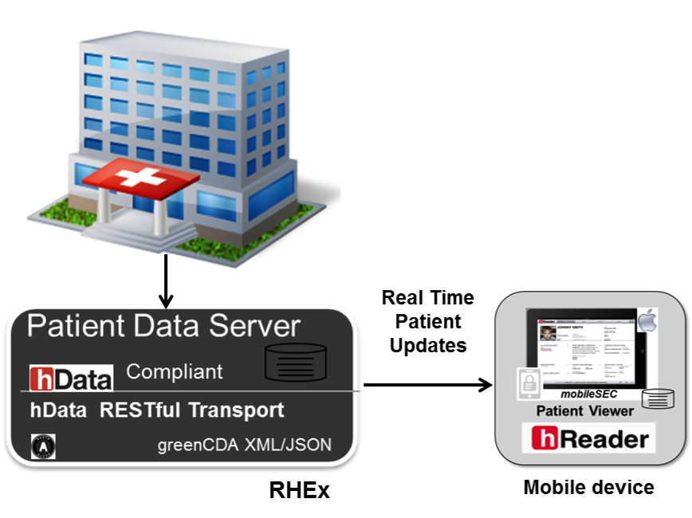

hReader works in conjunction with the RESTful Health Exchange project (RHEx) Patient Data Server to provide patients with their data. RHEx interfaces with a variety of different EHR systems and acts as a secure repository for patient data. RHEx also provides a single RESTful API, which hReader uses to access the data.
Once the patient's data is downloaded to hReader in greenCDA JSON format, it is encrypted (if the pass code has been set) and stored on the iPad so that it can be accessed even without a network connection. Local iPad storage allows the patient to control their own data, bring it to their provider, and ask more informed questions about their health.
If a network connection is available, real-time updates are possible between RHEx and hReader.
Back to tophReader is released under the Apache 2.0 license.
Back to topThe most prominent and active activities are always published on the project website. We have attempted to include enough high level information on our project site and our installation instructions available in the source code to setup the development environment for hReader. Whenever possible, please make use of our FAQ and software documentation before exploring other communication channels.
There are three email distribution lists which may also be used to request information about the project's plans and activities. These lists are:
Anyone can subscribe to this list. Messages to this list are limited to the hReader governing organizations.
Like the announcement list, anyone can subscribe to this list. Additionally, anyone is free to submit questions about the project to this list. To prevent spam, all message are first reviewed by the project team before being forwarded to the distribution list.
This list is exclusively used for software development questions. Membership to this list is also open to anyone. However, we encourage individuals to limit participation to those that are active software engineers. Likewise, anyone is free to submit questions about the project to this list. Similarly, to prevent spam, all messages are first reviewed by the project team before being forwarded to the distribution list.
Yes. Code contributions, bug fixes, ideas for new features, are all welcome for hReader. A requirement for contributing software is that any and all software contributed to hReader is released under an Apache 2.0 open source distribution license, and that you transfer copyright of any code or patches you submit to the project. Source code contributions, as well as dialog/discussions for feature requests and enhancements will be publicly reviewed and vetted by the hReader project's governing organizations.
To submit a new feature for consideration into the hReader repository, setup an account on GitHub. Fork the hReader code, and create a branch of hReader on your repository. Send the link to your hReader branch to the hReader developer email list, and cite either an existing bug or feature from the hReader project tracker to specify the changes that you are contributing.
If you have suggestions on new features, or want to report a bug that has not yet been tracked, send an email to the developer email list with either the details to reproduce a bug, or detailed description about a suggested feature that you would like to see added to hReader.
Back to tophReader is a collaborative research project from the MITRE Corporation
*All health data and information in the screen shots is synthetic.